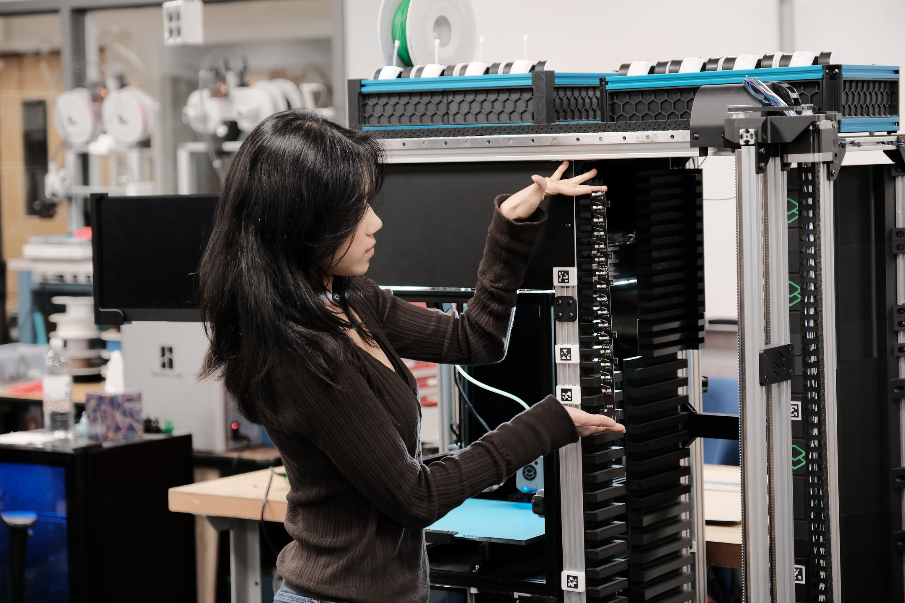
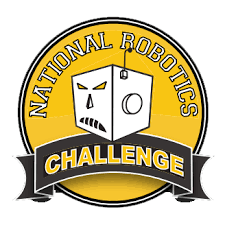
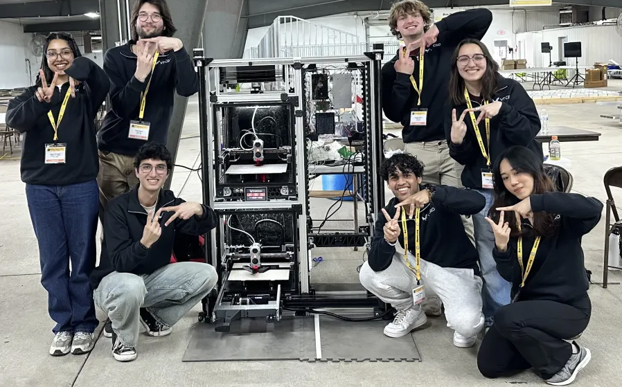
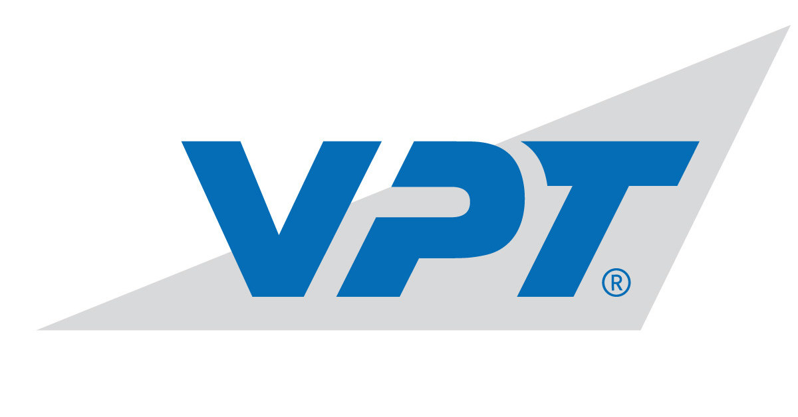
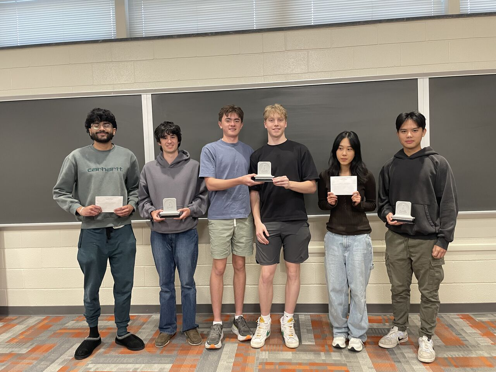
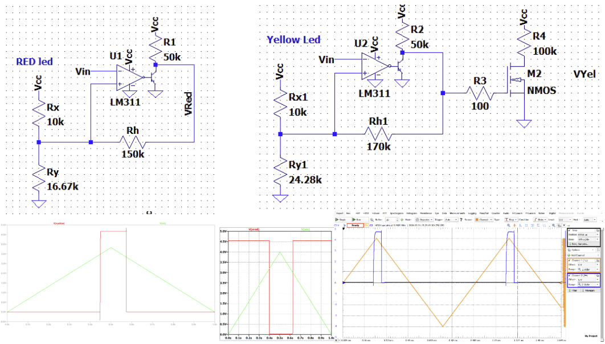

01

Honda Innovation Award
Awarded to VT CRO for manufacturing innovation during the National Robotics Challenge 2025. $500 cash prize from Honda sponsor.

May Thu Thu
I am May! I am in my final year of my Bachelor's in Electrical Engineering from Virginia Tech with a focus in Micro/Nano Systems.
About
Bachelor's in Electrical Engineering with a focus in Micro/Nano Systems.
Dean's List with Distinction Scholar
Awards
Awarded to VT CRO for manufacturing innovation during the National Robotics Challenge 2025. $500 cash prize from Honda sponsor.


VT CRO took home first place in the Manufacturing Workcell division in the National Robotics Challenge 2025. My contribution to the custom electronics in projects section.
VT CRO's Workcell Version 2 was selected to exhibit at San Francisco's Open Sauce Technology and Creator Festival, attracting over 20,000 attendees and 500 exhibitors.



Designed a fully analog power supply failure detection circuit in 4 hours. Our circuit achieved a 15/15 hysteresis accuracy score and placed 3rd overall out of 12 teams.
Project Title: PUE (kW) Consumption vs Water Consumption Cost Analysis. Theme: Optimizing Cooling Technology for Sustainable Manufacturing. Won 2nd place/runnerup out of 13 teams and 50+ contestants.
Selected work
Designed and simulated a CMOS ring oscillator using transistor-level models and SPICE-based verification workflows.
RF oscillator design project using schematic simulation and PCB layout workflows for frequency-controlled signal generation.
Designed an Infineon BFP410 amplifier matched to 50 ohms with an LP input match and pi output match. Achieved 20 dB gain and -12 dB input and output S-parameters at center frequency; EM simulations were carried out in Keysight ADS and a 2-layer FR4 PCB was designed in KiCAD.
Designed a PCB for cascaded shift-register control, focusing on clean digital routing, modular expansion, and reliable board-level bring-up.
Built an embedded C maze game on MSP432 using UART, SPI, GPIO, LCD graphics, finite state machines (FSMs), and real-time user interaction. Developed enemy AI with autonomous pathfinding, distance-based decision making, collision detection, and game-state control.


Designed a boost converter PCB with attention to switching layout, component selection, power-path routing, and practical validation.
Core stack
I've explored almost every corner of Electrical Engineering and have worked across areas like nuclear, power and energy, data center engineering, embedded systems, analog/digital/mixed signal design, board-level and transistor-level design, IC design, RF/microwave, power electronics, and robotics/automation. I’m especially passionate about hardware/circuit design and enjoy anything that involves building and understanding hardware systems.
C, C++, Python, MATLAB, Verilog, Assembly, Linux, Git, Bash, Intel Quartus
Oscilloscopes, function generators, signal generators, spectrum analyzers, network analyzers, multimeters, Analog Discovery (AD3), soldering
LTspice, ngspice, Keysight ADS, KiCAD, Altium, PCBA
Contact